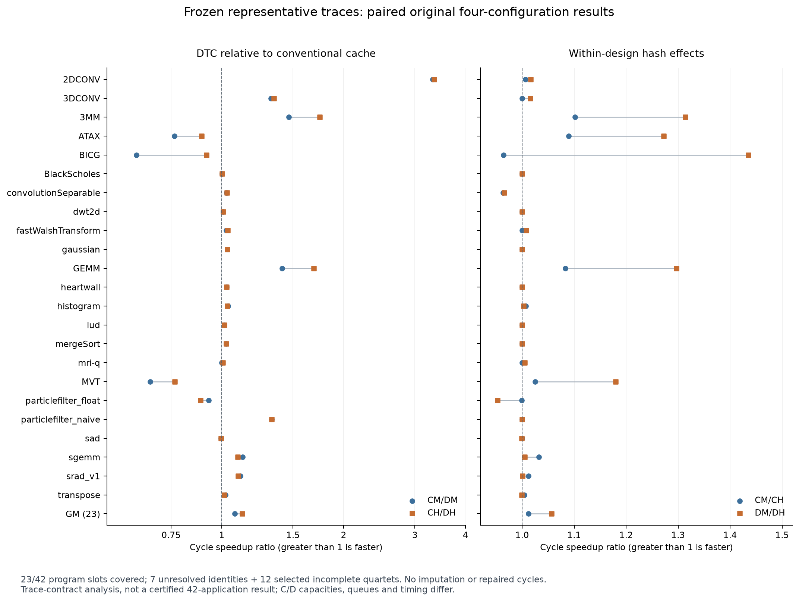
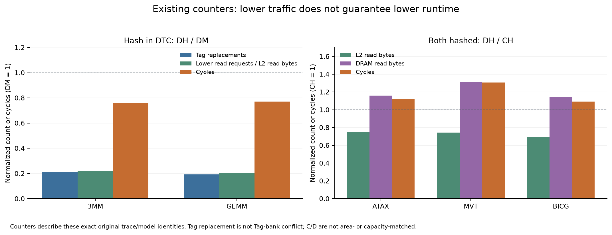

身份冻结选择的是有内容SHA的历史trace；本轮没有为所有成员补发精确capture-time二进制、原始输入数据与全应用捕获证明。下列GM是已冻结身份、原始有效trace合同下的23项共同集合，不是完整42应用论文GM，也不是新数值正确性认证。
冻结SHA：a4157b56b48d8d8df048b9f64e62d54b091e80176d7a05169ef9c64b0c06da9d；先冻结后汇总。完整报告 · 44→42与72→42映射 · 原始性能审计 · 计数器与证据路径
| 指标 | GM | 正 / 零 / 负 | 中位数 | 范围 | 42目标缺失 |
|---|---|---|---|---|---|
| 传统 Hash CM/CH | 1.0120× | 9 / 11 / 3 | 1.0000× | 0.9636× ～ 1.1016× | 19 |
| DTC Hash DM/DH | 1.0567× | 13 / 6 / 4 | 1.0007× | 0.9524× ～ 1.4348× | 19 |
| Hash前 DTC/传统 CM/DM | 1.0763× | 18 / 0 / 5 | 1.0266× | 0.6160× ～ 3.3146× | 19 |
| Hash后 DTC/传统 CH/DH | 1.1239× | 18 / 0 / 5 | 1.0270× | 0.7663× ～ 3.3473× | 19 |
| 相对改善 (CH/DH)/(CM/DM) | 1.0442× | 11 / 6 / 6 | 1.0000× | 0.9533× ～ 1.4883× | 19 |
建议后续优先固定CH/DH，保留CM/DM消融；没有执行任何配置变更。该集合的相对GM和Hash后DTC GM均改善，但完整42程序结论尚不可得。

仅显示所选身份；UNRESOLVED不从备选中捞取可用结果，失败不由修复结果补齐。表中空白是缺失。
| 程序 | 输入SHA前缀 | CM cycles | CH cycles | DM cycles | DH cycles | CM/CH | DM/DH | CM/DM | CH/DH | 相对改善 |
|---|---|---|---|---|---|---|---|---|---|---|
| 2DCONV | d984ea5475a581ad | 1,559,265 | 1,548,909 | 470,425 | 462,740 | 1.0067× | 1.0166× | 3.3146× | 3.3473× | 1.0099× |
| 3DCONV | 79f8ab6241faeed6 | 2,958,083 | 2,958,083 | 2,235,274 | 2,200,332 | 1.0000× | 1.0159× | 1.3234× | 1.3444× | 1.0159× |
| 3MM | 977a2f7007cb1f96 | 4,617,374 | 4,191,465 | 3,156,575 | 2,402,871 | 1.1016× | 1.3137× | 1.4628× | 1.7444× | 1.1925× |
| ATAX | eededb785179fc04 | 30,981,690 | 28,428,842 | 40,569,964 | 31,880,220 | 1.0898× | 1.2726× | 0.7637× | 0.8917× | 1.1677× |
| backprop | UNRESOLVED | — | — | — | — | — | — | — | — | — |
| bfs | 1df9d5479504d9c7 | 4,330,430 | 4,330,430 | — | — | — | — | — | — | — |
| BICG | ae34174fbbdf83b2 | 25,353,488 | 26,298,698 | 41,157,397 | 28,685,812 | 0.9641× | 1.4348× | 0.6160× | 0.9168× | 1.4883× |
| BlackScholes | b31a85e4eb8d32ef | 8,993 | 8,993 | 8,971 | 8,971 | 1.0000× | 1.0000× | 1.0025× | 1.0025× | 1.0000× |
| cfd | UNRESOLVED | — | — | — | — | — | — | — | — | — |
| convolutionSeparable | 4114a3dc0d06b55b | 795,125 | 825,151 | 773,047 | 800,572 | 0.9636× | 0.9656× | 1.0286× | 1.0307× | 1.0021× |
| cutcp | af7320f9d9dc6629 | — | — | — | — | — | — | — | — | — |
| dwt2d | e5638b94095098ac | 73,691 | 73,691 | 73,071 | 73,071 | 1.0000× | 1.0000× | 1.0085× | 1.0085× | 1.0000× |
| fastWalshTransform | f7f22a2ccc836a8a | 191,732 | 191,732 | 186,762 | 185,317 | 1.0000× | 1.0078× | 1.0266× | 1.0346× | 1.0078× |
| gaussian | 16f4c42373e4961e | 763,932 | 763,932 | 740,717 | 740,717 | 1.0000× | 1.0000× | 1.0313× | 1.0313× | 1.0000× |
| GEMM | fc0705ae3721e999 | 1,511,333 | 1,395,216 | 1,071,405 | 826,089 | 1.0832× | 1.2970× | 1.4106× | 1.6889× | 1.1973× |
| GESUMMV | 769e6d9fd5f9cd53 | 99,700,244 | — | 115,478,136 | 89,502,220 | — | — | — | — | — |
| heartwall | 731af5428c4b8155 | 8,782 | 8,782 | 8,551 | 8,551 | 1.0000× | 1.0000× | 1.0270× | 1.0270× | 1.0000× |
| histo | 2c506bf13c81ff5d | 5,650,840 | 5,636,037 | — | — | — | — | — | — | — |
| histogram | 3722a5c85d91a948 | 102,150 | 101,432 | 98,469 | 98,202 | 1.0071× | 1.0027× | 1.0374× | 1.0329× | 0.9957× |
| hybridsort | 09f94fcc7494a03b | — | — | — | — | — | — | — | — | — |
| kmeans | UNRESOLVED | — | — | — | — | — | — | — | — | — |
| lavamd | ddb6806316876a85 | — | — | — | — | — | — | — | — | — |
| lud | b33381cf25d44359 | 485,866 | 485,866 | 478,769 | 478,654 | 1.0000× | 1.0002× | 1.0148× | 1.0151× | 1.0002× |
| mergeSort | dd9f695c4f53b083 | 114,742 | 114,742 | 111,917 | 111,917 | 1.0000× | 1.0000× | 1.0252× | 1.0252× | 1.0000× |
| mri-q | dc7a91531846c113 | 362,244 | 362,244 | 361,988 | 360,174 | 1.0000× | 1.0050× | 1.0007× | 1.0057× | 1.0050× |
| MVT | f437190767aaed49 | 27,246,579 | 26,581,175 | 40,926,747 | 34,687,540 | 1.0250× | 1.1799× | 0.6657× | 0.7663× | 1.1511× |
| myocyte | 977e34578994c3d2 | 145,909,578 | — | — | 145,147,976 | — | — | — | — | — |
| nn | UNRESOLVED | — | — | — | — | — | — | — | — | — |
| nw | UNRESOLVED | — | — | — | — | — | — | — | — | — |
| particlefilter_float | b41cc74c66ca6ed4 | 1,859,320 | 1,861,126 | 2,000,825 | 2,100,874 | 0.9990× | 0.9524× | 0.9293× | 0.8859× | 0.9533× |
| particlefilter_naive | 3f85d1878aba9f04 | 511,136 | 511,136 | 384,601 | 384,601 | 1.0000× | 1.0000× | 1.3290× | 1.3290× | 1.0000× |
| pathfinder | UNRESOLVED | — | — | — | — | — | — | — | — | — |
| sad | db89be14146b9163 | 114,310 | 114,310 | 114,787 | 114,870 | 1.0000× | 0.9993× | 0.9958× | 0.9951× | 0.9993× |
| scalarProd | 2b93f70cd0666c51 | — | 420,477 | 411,009 | — | — | — | — | — | — |
| scan | 6df3a84b612086e8 | 6,657,550 | — | 6,638,079 | 6,648,993 | — | — | — | — | — |
| sgemm | ffc8a89493c8a211 | 463,025 | 448,633 | 411,354 | 409,417 | 1.0321× | 1.0047× | 1.1256× | 1.0958× | 0.9735× |
| srad_v1 | 0e62c67daa020853 | 8,141,513 | 8,043,823 | 7,329,720 | 7,324,411 | 1.0121× | 1.0007× | 1.1108× | 1.0982× | 0.9887× |
| stencil | c885293ad99e21ee | — | 4,965,921 | 4,662,470 | — | — | — | — | — | — |
| streamcluster | UNRESOLVED | — | — | — | — | — | — | — | — | — |
| SYRK | b51811aca9dc70cf | — | — | — | — | — | — | — | — | — |
| transpose | 65151d2c661f88f3 | 242,411 | 241,346 | 237,589 | 237,820 | 1.0044× | 0.9990× | 1.0203× | 1.0148× | 0.9946× |
| vectorAdd | e7bb67e63e3c3847 | 220,803 | 220,803 | 217,305 | — | — | — | — | — | — |
| ID | 程序 | 决定 | 所选SHA前缀 | 版本 | 参数 | 理由 |
|---|---|---|---|---|---|---|
| P42-01 | 2DCONV | 身份已选 | d984ea5475a581ad | GPU 1.0 source mapping; capture path 11.0 is toolchain label | NO_ARGS | Only ordinary trace identity for this program in the72-input matrix; no outcome-dependent replacement. Keep its recorded source/command/content identity. Exact capture-time executable/input-content and full-application provenance are not newly certified. |
| P42-02 | 3DCONV | 身份已选 | 79f8ab6241faeed6 | GPU 1.0 source mapping; capture path 11.0 is toolchain label | NO_ARGS | Only ordinary trace identity for this program in the72-input matrix; no outcome-dependent replacement. Keep its recorded source/command/content identity. Exact capture-time executable/input-content and full-application provenance are not newly certified. |
| P42-03 | 3MM | 身份已选 | 977a2f7007cb1f96 | GPU 1.0 source mapping; capture path 11.0 is toolchain label | NO_ARGS | Only ordinary trace identity for this program in the72-input matrix; no outcome-dependent replacement. Keep its recorded source/command/content identity. Exact capture-time executable/input-content and full-application provenance are not newly certified. |
| P42-04 | ATAX | 身份已选 | eededb785179fc04 | GPU 1.0 source mapping; capture path 11.0 is toolchain label | NO_ARGS | FULL_SCOPE_SELECTED_PARTIAL_PROVEN: Source PolyBench/GPU1.0 NX=NY=4096, FP32, two kernels and two16*256 grids match67,108,864-byte A plus three16,384-byte vectors. Full declared grids and both source launches retained. dd8955 is proven body-prefix subset with only grid rewritten16->2; excluded regardless of its performance. |
| DERIVED-01 | b+tree | 派生输入独立保留 | — | — | — | Existing input is INDEPENDENT_DERIVED_MODEL_CONDITIONED_INPUT; NOT_ORIGINAL44_SCIENTIFIC_PROMOTION. Independent mechanism reference only. |
| P42-05 | backprop | UNRESOLVED | — | — | — | Two different source versions (2.0-ft4096 and3.1 65536) each have a standard command. No approved reference precedence or demonstrated source/data equivalence establishes one version for the42-set. Two4096 captures also differ; do not merge or pick by their outcomes. |
| P42-06 | bfs | 身份已选 | 1df9d5479504d9c7 | Parboil; capture path 11.0 is not suite revision proof | _i___data_NY_input_graph_input_dat__o_bfs_NY_out | Only ordinary trace identity for this program in the72-input matrix; no outcome-dependent replacement. Keep its recorded source/command/content identity. Exact capture-time executable/input-content and full-application provenance are not newly certified. |
| P42-07 | BICG | 身份已选 | ae34174fbbdf83b2 | GPU 1.0 source mapping; capture path 11.0 is toolchain label | NO_ARGS | Only ordinary trace identity for this program in the72-input matrix; no outcome-dependent replacement. Keep its recorded source/command/content identity. Exact capture-time executable/input-content and full-application provenance are not newly certified. |
| P42-08 | BlackScholes | 身份已选 | b31a85e4eb8d32ef | cudasdk/9.1 path; exact capture provenance not newly certified | NO_ARGS | Only ordinary trace identity for this program in the72-input matrix; no outcome-dependent replacement. Keep its recorded source/command/content identity. Exact capture-time executable/input-content and full-application provenance are not newly certified. |
| P42-09 | cfd | UNRESOLVED | — | — | — | All three traces contain only three initialize kernels, one step-factor and one flux kernel, with no time_step. Source3.1 euler3d has3initialization+2000*(1step+3flux+3time_step) launches. Exact capture-binary modification/ROI contract absent. Thus no input is verified full-application capture. Candidate193K trace actually has padded193536 cells (grid1008*192), not an exact nel identity; raw mesh SHA/nel missing. Historical E1 reference097K also cannot bypass this scope gap. Retain previous193K nomination only as rejected/unresolved provenance, no silent swap to097K. |
| P42-10 | convolutionSeparable | 身份已选 | 4114a3dc0d06b55b | cudasdk/9.1 path; exact capture provenance not newly certified | __size_3072 | Only ordinary trace identity for this program in the72-input matrix; no outcome-dependent replacement. Keep its recorded source/command/content identity. Exact capture-time executable/input-content and full-application provenance are not newly certified. |
| P42-11 | cutcp | 身份已选 | af7320f9d9dc6629 | Parboil; capture path 11.0 is not suite revision proof | _i___data_small_input_watbox_sl40_pqr__o_lattice_dat | Only ordinary trace identity for this program in the72-input matrix; no outcome-dependent replacement. Keep its recorded source/command/content identity. Exact capture-time executable/input-content and full-application provenance are not newly certified. |
| P42-12 | dwt2d | 身份已选 | e5638b94095098ac | 3.1 | __data_192_bmp__d_192x192__f__5__l_3 | PRIOR_REFERENCE_SELECTED: Historical E1 source/input inventory nominates Rodinia3.1 192.bmp -d192x192 -f -5 -l3 (input reference595e63cc...). Trace copies110592=192*192*3 bytes, component split plus3channels*3levels=10 kernels. 1024 variant has unconfirmed source version and different kernel specializations; not treated as duplicate. |
| P42-13 | fastWalshTransform | 身份已选 | f7f22a2ccc836a8a | cudasdk/9.1 path; exact capture provenance not newly certified | _logK_11__logD_19 | PRIOR_REFERENCE_SELECTED: Previously approved pre-current-performance Extended-20 primary11/19 at selection commit d43b6eec93f68efa94057f34ffa699463b53e6a6, with7/21 explicitly alternate. No dimension-wise ranking of the two pairs. Trace K8192/D2097152 bytes and three transform groups+modulation match source recipe. |
| P42-14 | gaussian | 身份已选 | 16f4c42373e4961e | 3.1 | _s_64 | MEDIAN_SIZE_SOURCE_VERIFIED: E1 explicitly did not promote a primary Gaussian command. All five inputs are3.1 same Fan1/Fan2 ForwardSub algorithm; -f/-s only supply matrix/RHS. Trace copies establish N=4,16,64,208,256 and each has2*(N-1) alternating kernels. Median N64, deterministic source-generated matrix; no pivot/precision/algorithm flag changes. Not asserting matrix contents equivalent across sizes. |
| P42-15 | GEMM | 身份已选 | fc0705ae3721e999 | GPU 1.0 source mapping; capture path 11.0 is toolchain label | NO_ARGS | Only ordinary trace identity for this program in the72-input matrix; no outcome-dependent replacement. Keep its recorded source/command/content identity. Exact capture-time executable/input-content and full-application provenance are not newly certified. |
| P42-16 | GESUMMV | 身份已选 | 769e6d9fd5f9cd53 | GPU 1.0 source mapping; capture path 11.0 is toolchain label | NO_ARGS | Only ordinary trace identity for this program in the72-input matrix; no outcome-dependent replacement. Keep its recorded source/command/content identity. Exact capture-time executable/input-content and full-application provenance are not newly certified. |
| P42-17 | heartwall | 身份已选 | 731af5428c4b8155 | 2.0-ft | __data_test_avi_1___data_result_1_txt | REFERENCE_CAPTURE_PROVENANCE_SELECTED: Both captures carry2.0-ft standard1-frame command. Choose the official archive/capture with SHA-preserved run.sh and known source-alias lineage over1299a96e, which has no retained capture script. Source loop launches one kernel per processed frame; chosen trace contains one full51-CTA grid. Byte/semantic equivalence to alternate capture is NOT asserted. Original video/executable SHA linkage remains provenance gap. |
| P42-18 | histo | 身份已选 | 2c506bf13c81ff5d | Parboil; capture path 11.0 is not suite revision proof | _i___data_default_input_img_bin__o_ref_bmp____20_4 | Only ordinary trace identity for this program in the72-input matrix; no outcome-dependent replacement. Keep its recorded source/command/content identity. Exact capture-time executable/input-content and full-application provenance are not newly certified. |
| P42-19 | histogram | 身份已选 | 3722a5c85d91a948 | cudasdk/9.1 path; exact capture provenance not newly certified | NO_ARGS | Only ordinary trace identity for this program in the72-input matrix; no outcome-dependent replacement. Keep its recorded source/command/content identity. Exact capture-time executable/input-content and full-application provenance are not newly certified. |
| DERIVED-02 | hotspot | 派生输入独立保留 | — | — | — | Existing input is INDEPENDENT_DERIVED_MODEL_CONDITIONED_INPUT; NOT_ORIGINAL44_SCIENTIFIC_PROMOTION. Independent mechanism reference only. |
| P42-20 | hybridsort | 身份已选 | 09f94fcc7494a03b | 3.1 | r | UPPER_MEDIAN_SOURCE_VERIFIED: Source3.1 main.cu r fixes SIZE=1<<22=4194304 FP32 values; file variant contains500000 values. Both execute same cudaSort pipeline four times (TEST4). Trace has four16777216-byte input copies and68 kernels, versus four2000000-byte copies and56 kernels. Same sort algorithm, upper median4194304 selects r. Data distributions/realized random input are not declared equivalent. |
| P42-21 | kmeans | UNRESOLVED | — | — | — | 2.0-ft400 versus3.1 28k_4x_features/kdd_cup/819200 mix implementation and feature/input semantics. Dataset dimensions/content and a single intended standard configuration are not jointly bound. No one-dimensional median or arbitrary newest-version choice. |
| P42-22 | lavamd | 身份已选 | ddb6806316876a85 | 3.1 | _boxes1d_10 | Only ordinary trace identity for this program in the72-input matrix; no outcome-dependent replacement. Keep its recorded source/command/content identity. Exact capture-time executable/input-content and full-application provenance are not newly certified. |
| P42-23 | lud | 身份已选 | b33381cf25d44359 | 3.1 | _s_256__v | PRIOR_REFERENCE_SELECTED: Historical pre-current-performance E1 primary is Rodinia3.1 generated -s256 -v. Prefer this identified reference, not pooled median across2.0-ft/3.1 implementations. Trace262144-byte matrix and16 diagonal+15perimeter+15internal kernels match full256 block16 LU. Retain512 and both2.0-ft64 captures as distinct alternatives. |
| P42-24 | mergeSort | 身份已选 | dd9f695c4f53b083 | cudasdk/9.1 path; exact capture provenance not newly certified | NO_ARGS | Only ordinary trace identity for this program in the72-input matrix; no outcome-dependent replacement. Keep its recorded source/command/content identity. Exact capture-time executable/input-content and full-application provenance are not newly certified. |
| P42-25 | mri-q | 身份已选 | dc7a91531846c113 | Parboil; capture path 11.0 is not suite revision proof | _i___data_small_input_32_32_32_dataset_bin__o_32_32_32_dataset_out | Only ordinary trace identity for this program in the72-input matrix; no outcome-dependent replacement. Keep its recorded source/command/content identity. Exact capture-time executable/input-content and full-application provenance are not newly certified. |
| P42-26 | MVT | 身份已选 | f437190767aaed49 | GPU 1.0 source mapping; capture path 11.0 is toolchain label | 20260825-b07c0ad-full / NO_ARGS | Only ordinary trace identity for this program in the72-input matrix; no outcome-dependent replacement. Keep its recorded source/command/content identity. Exact capture-time executable/input-content and full-application provenance are not newly certified. |
| P42-27 | myocyte | 身份已选 | 977e34578994c3d2 | 3.1 | 100_1_0 | Only ordinary trace identity for this program in the72-input matrix; no outcome-dependent replacement. Keep its recorded source/command/content identity. Exact capture-time executable/input-content and full-application provenance are not newly certified. |
| P42-28 | nn | UNRESOLVED | — | — | — | 2.0-ft command selects3 neighbors;3.1 uses-r5. Source-version and algorithm-parameter differences matter. No approved42-set version/k precedence; two2.0-ft captures not proven equivalent. |
| P42-29 | nw | UNRESOLVED | — | — | — | 2.0-ft128x128 and3.1 2048x2048 both standard configurations, but no approved reference precedence across implementations; two128 captures differ. Do not use result size or pass status to decide. |
| P42-30 | particlefilter_float | 身份已选 | b41cc74c66ca6ed4 | 3.1 | _x_128__y_128__z_10__np_1000 | Only ordinary trace identity for this program in the72-input matrix; no outcome-dependent replacement. Keep its recorded source/command/content identity. Exact capture-time executable/input-content and full-application provenance are not newly certified. |
| P42-31 | particlefilter_naive | 身份已选 | 3f85d1878aba9f04 | 3.1 | _x_128__y_128__z_10__np_1000 | Only ordinary trace identity for this program in the72-input matrix; no outcome-dependent replacement. Keep its recorded source/command/content identity. Exact capture-time executable/input-content and full-application provenance are not newly certified. |
| P42-32 | pathfinder | UNRESOLVED | — | — | — | 2.0-ft1000/20/5 versus3.1 100000/100/20 changes implementation, rows/columns and pyramid height. No fixed cross-version input policy;1000/20/5 captures unproven equivalent. |
| P42-33 | sad | 身份已选 | db89be14146b9163 | Parboil; capture path 11.0 is not suite revision proof | _i___data_default_input_reference_bin___data_default_input_frame_bin__o_out_bin | Only ordinary trace identity for this program in the72-input matrix; no outcome-dependent replacement. Keep its recorded source/command/content identity. Exact capture-time executable/input-content and full-application provenance are not newly certified. |
| P42-34 | scalarProd | 身份已选 | 2b93f70cd0666c51 | cudasdk/9.1 path; exact capture provenance not newly certified | __size_13920 | REFERENCE_AND_SIZE_VERIFIED: Pre-performance Extended-20 primary scalarProd_13920; upstream gpu-app-collection b059fdae parameter parser sets VECTOR_N=13920, ELEMENT_N=1024. Trace HtoD A/B each 57016320 bytes =13920*1024*4. Single scalarProdGPU launch. Same result as upper median. |
| P42-35 | scan | 身份已选 | 6df3a84b612086e8 | cudasdk/9.1 path; exact capture provenance not newly certified | NO_ARGS | Only ordinary trace identity for this program in the72-input matrix; no outcome-dependent replacement. Keep its recorded source/command/content identity. Exact capture-time executable/input-content and full-application provenance are not newly certified. |
| P42-36 | sgemm | 身份已选 | ffc8a89493c8a211 | Parboil; capture path 11.0 is not suite revision proof | _i___data_medium_input_matrix1_txt___data_medium_input_matrix2t_txt___data_medium_input_matrix2t_txt__o_matrix3_txt | Only ordinary trace identity for this program in the72-input matrix; no outcome-dependent replacement. Keep its recorded source/command/content identity. Exact capture-time executable/input-content and full-application provenance are not newly certified. |
| P42-37 | srad_v1 | 身份已选 | 0e62c67daa020853 | 3.1 | 100_0_5_502_458 | Only ordinary trace identity for this program in the72-input matrix; no outcome-dependent replacement. Keep its recorded source/command/content identity. Exact capture-time executable/input-content and full-application provenance are not newly certified. |
| P42-38 | stencil | 身份已选 | c885293ad99e21ee | Parboil; capture path 11.0 is not suite revision proof | _i___data_small_input_128x128x32_bin__o_128x128x32_out____128_128_32_100 | Only ordinary trace identity for this program in the72-input matrix; no outcome-dependent replacement. Keep its recorded source/command/content identity. Exact capture-time executable/input-content and full-application provenance are not newly certified. |
| P42-39 | streamcluster | UNRESOLVED | — | — | — | 3.1 parameters3/6/16 and10/20/256 change kmin/kmax and point dimension simultaneously. Sample count alone is not a comparable scalar size. No uniquely approved reference among these tuples. |
| P42-40 | SYRK | 身份已选 | b51811aca9dc70cf | GPU 1.0 source mapping; capture path 11.0 is toolchain label | 20260825-b07c0ad-full / NO_ARGS | Only ordinary trace identity for this program in the72-input matrix; no outcome-dependent replacement. Keep its recorded source/command/content identity. Exact capture-time executable/input-content and full-application provenance are not newly certified. |
| P42-41 | transpose | 身份已选 | 65151d2c661f88f3 | cudasdk/9.1 path; exact capture provenance not newly certified | dimX512_dimY512 | Only ordinary trace identity for this program in the72-input matrix; no outcome-dependent replacement. Keep its recorded source/command/content identity. Exact capture-time executable/input-content and full-application provenance are not newly certified. |
| P42-42 | vectorAdd | 身份已选 | e7bb67e63e3c3847 | cudasdk/9.1 path; exact capture provenance not newly certified | __size_6000000 | REFERENCE_AND_SIZE_VERIFIED: Pre-performance Extended-20 primary vectorAdd_6000000; upstream b059fdae parses N=6000000. Trace A/B each24000000 bytes, full VecAdd grid23438*256 with tail predication. Same result as upper median. |
| 程序 | 参数 | SHA / 状态 | 裁决依据 |
|---|---|---|---|
| backprop | — | UNRESOLVED | Two different source versions (2.0-ft4096 and3.1 65536) each have a standard command. No approved reference precedence or demonstrated source/data equivalence establishes one version for the42-set. Two4096 captures also differ; do not merge or pick by their outcomes. |
| dwt2d | __data_192_bmp__d_192x192__f__5__l_3 | e5638b94095098ac | PRIOR_REFERENCE_SELECTED: Historical E1 source/input inventory nominates Rodinia3.1 192.bmp -d192x192 -f -5 -l3 (input reference595e63cc...). Trace copies110592=192*192*3 bytes, component split plus3channels*3levels=10 kernels. 1024 variant has unconfirmed source version and different kernel specializations; not treated as duplicate. |
| fastWalshTransform | _logK_11__logD_19 | f7f22a2ccc836a8a | PRIOR_REFERENCE_SELECTED: Previously approved pre-current-performance Extended-20 primary11/19 at selection commit d43b6eec93f68efa94057f34ffa699463b53e6a6, with7/21 explicitly alternate. No dimension-wise ranking of the two pairs. Trace K8192/D2097152 bytes and three transform groups+modulation match source recipe. |
| gaussian | _s_64 | 16f4c42373e4961e | MEDIAN_SIZE_SOURCE_VERIFIED: E1 explicitly did not promote a primary Gaussian command. All five inputs are3.1 same Fan1/Fan2 ForwardSub algorithm; -f/-s only supply matrix/RHS. Trace copies establish N=4,16,64,208,256 and each has2*(N-1) alternating kernels. Median N64, deterministic source-generated matrix; no pivot/precision/algorithm flag changes. Not asserting matrix contents equivalent across sizes. |
| heartwall | __data_test_avi_1___data_result_1_txt | 731af5428c4b8155 | REFERENCE_CAPTURE_PROVENANCE_SELECTED: Both captures carry2.0-ft standard1-frame command. Choose the official archive/capture with SHA-preserved run.sh and known source-alias lineage over1299a96e, which has no retained capture script. Source loop launches one kernel per processed frame; chosen trace contains one full51-CTA grid. Byte/semantic equivalence to alternate capture is NOT asserted. Original video/executable SHA linkage remains provenance gap. |
| hybridsort | r | 09f94fcc7494a03b | UPPER_MEDIAN_SOURCE_VERIFIED: Source3.1 main.cu r fixes SIZE=1<<22=4194304 FP32 values; file variant contains500000 values. Both execute same cudaSort pipeline four times (TEST4). Trace has four16777216-byte input copies and68 kernels, versus four2000000-byte copies and56 kernels. Same sort algorithm, upper median4194304 selects r. Data distributions/realized random input are not declared equivalent. |
| kmeans | — | UNRESOLVED | 2.0-ft400 versus3.1 28k_4x_features/kdd_cup/819200 mix implementation and feature/input semantics. Dataset dimensions/content and a single intended standard configuration are not jointly bound. No one-dimensional median or arbitrary newest-version choice. |
| lud | _s_256__v | b33381cf25d44359 | PRIOR_REFERENCE_SELECTED: Historical pre-current-performance E1 primary is Rodinia3.1 generated -s256 -v. Prefer this identified reference, not pooled median across2.0-ft/3.1 implementations. Trace262144-byte matrix and16 diagonal+15perimeter+15internal kernels match full256 block16 LU. Retain512 and both2.0-ft64 captures as distinct alternatives. |
| nn | — | UNRESOLVED | 2.0-ft command selects3 neighbors;3.1 uses-r5. Source-version and algorithm-parameter differences matter. No approved42-set version/k precedence; two2.0-ft captures not proven equivalent. |
| nw | — | UNRESOLVED | 2.0-ft128x128 and3.1 2048x2048 both standard configurations, but no approved reference precedence across implementations; two128 captures differ. Do not use result size or pass status to decide. |
| pathfinder | — | UNRESOLVED | 2.0-ft1000/20/5 versus3.1 100000/100/20 changes implementation, rows/columns and pyramid height. No fixed cross-version input policy;1000/20/5 captures unproven equivalent. |
| streamcluster | — | UNRESOLVED | 3.1 parameters3/6/16 and10/20/256 change kmin/kmax and point dimension simultaneously. Sample count alone is not a comparable scalar size. No uniquely approved reference among these tuples. |
| 完整输入SHA | 映射决定 | 参数 | 版本 | 四配置原始身份 / accepted cycles | 选与不选依据 |
|---|---|---|---|---|---|
d984ea5475a581ad8ffa8181eaf1bb91e524de3889d30243278c285ed707c7a0 | SELECTED_REPRESENTATIVE | NO_ARGS | GPU 1.0 source mapping; capture path 11.0 is toolchain label | CM: ACCEPTED_ORIGINAL / 1,559,265 CH: ACCEPTED_ORIGINAL / 1,548,909 DM: ACCEPTED_ORIGINAL / 470,425 DH: ACCEPTED_ORIGINAL / 462,740 | Only ordinary trace identity for this program in the72-input matrix; no outcome-dependent replacement. Keep its recorded source/command/content identity. Exact capture-time executable/input-content and full-application provenance are not newly certified. |
| 完整输入SHA | 映射决定 | 参数 | 版本 | 四配置原始身份 / accepted cycles | 选与不选依据 |
|---|---|---|---|---|---|
79f8ab6241faeed64b49d05deecb1ad239fac5f123c4ceec75f7e0f6a9c5166d | SELECTED_REPRESENTATIVE | NO_ARGS | GPU 1.0 source mapping; capture path 11.0 is toolchain label | CM: ACCEPTED_ORIGINAL / 2,958,083 CH: ACCEPTED_ORIGINAL / 2,958,083 DM: ACCEPTED_ORIGINAL / 2,235,274 DH: ACCEPTED_ORIGINAL / 2,200,332 | Only ordinary trace identity for this program in the72-input matrix; no outcome-dependent replacement. Keep its recorded source/command/content identity. Exact capture-time executable/input-content and full-application provenance are not newly certified. |
| 完整输入SHA | 映射决定 | 参数 | 版本 | 四配置原始身份 / accepted cycles | 选与不选依据 |
|---|---|---|---|---|---|
977a2f7007cb1f9673fe3a5c17cdbb469335c619c172a0a882eb18410049eb3d | SELECTED_REPRESENTATIVE | NO_ARGS | GPU 1.0 source mapping; capture path 11.0 is toolchain label | CM: ACCEPTED_ORIGINAL / 4,617,374 CH: ACCEPTED_ORIGINAL / 4,191,465 DM: ACCEPTED_ORIGINAL / 3,156,575 DH: ACCEPTED_ORIGINAL / 2,402,871 | Only ordinary trace identity for this program in the72-input matrix; no outcome-dependent replacement. Keep its recorded source/command/content identity. Exact capture-time executable/input-content and full-application provenance are not newly certified. |
| 完整输入SHA | 映射决定 | 参数 | 版本 | 四配置原始身份 / accepted cycles | 选与不选依据 |
|---|---|---|---|---|---|
dd8955feff97ab8c2013c32daccb3e916dc7dce6d435c913b4eaa0a61e64f308 | EXCLUDED_PROVEN_PARTIAL_CAPTURE | polybench-atax-1of10 | GPU 1.0 source mapping; capture path 11.0 is toolchain label | CM: ACCEPTED_ORIGINAL / 11,174,024 CH: ACCEPTED_ORIGINAL / 7,158,457 DM: ACCEPTED_ORIGINAL / 6,980,448 DH: ACCEPTED_ORIGINAL / 5,989,485 | ATAX_PREFIX_PROOF.json proves this is a grid-rewritten prefix of eededb78, not a full application. |
eededb785179fc0488c5a01d95154f6748ea45a2ea7bb18ecdbc316cf5166950 | SELECTED_REPRESENTATIVE | NO_ARGS | GPU 1.0 source mapping; capture path 11.0 is toolchain label | CM: ACCEPTED_ORIGINAL / 30,981,690 CH: ACCEPTED_ORIGINAL / 28,428,842 DM: ACCEPTED_ORIGINAL / 40,569,964 DH: ACCEPTED_ORIGINAL / 31,880,220 | FULL_SCOPE_SELECTED_PARTIAL_PROVEN: Source PolyBench/GPU1.0 NX=NY=4096, FP32, two kernels and two16*256 grids match67,108,864-byte A plus three16,384-byte vectors. Full declared grids and both source launches retained. dd8955 is proven body-prefix subset with only grid rewritten16->2; excluded regardless of its performance. |
| 完整输入SHA | 映射决定 | 参数 | 版本 | 四配置原始身份 / accepted cycles | 选与不选依据 |
|---|---|---|---|---|---|
e7c791ce2e4b09eea844428fdf220e0d3f095783c022a60aa9186c6146ddd83c | INDEPENDENT_DERIVED_ONLY | 3.1 | CM: ACCEPTED_ORIGINAL / 188,570 CH: ACCEPTED_ORIGINAL / 189,535 DM: ORIGINAL_RECEIPT_MISSING / — DH: ACCEPTED_ORIGINAL / 153,394 | Existing input is INDEPENDENT_DERIVED_MODEL_CONDITIONED_INPUT; NOT_ORIGINAL44_SCIENTIFIC_PROMOTION. Independent mechanism reference only. |
| 完整输入SHA | 映射决定 | 参数 | 版本 | 四配置原始身份 / accepted cycles | 选与不选依据 |
|---|---|---|---|---|---|
5fa6f81161d230f55179618027a07e9060d87511e79943049494e2768d2788ad | UNRESOLVED_PROGRAM_ALTERNATIVE | 65536 | 3.1 | CM: ACCEPTED_ORIGINAL / 68,615 CH: ACCEPTED_ORIGINAL / 68,615 DM: ACCEPTED_ORIGINAL / 65,484 DH: ACCEPTED_ORIGINAL / 65,428 | Two different source versions (2.0-ft4096 and3.1 65536) each have a standard command. No approved reference precedence or demonstrated source/data equivalence establishes one version for the42-set. Two4096 captures also differ; do not merge or pick by their outcomes. |
66a2ff40b5b4f8daee8b489afd05afbcd68725361ea49d50e2e29dfefea76ece | UNRESOLVED_PROGRAM_ALTERNATIVE | 4096___data_result_4096_txt | 2.0-ft | CM: ACCEPTED_ORIGINAL / 15,712 CH: ACCEPTED_ORIGINAL / 15,712 DM: ACCEPTED_ORIGINAL / 14,637 DH: ACCEPTED_ORIGINAL / 14,637 | Two different source versions (2.0-ft4096 and3.1 65536) each have a standard command. No approved reference precedence or demonstrated source/data equivalence establishes one version for the42-set. Two4096 captures also differ; do not merge or pick by their outcomes. |
6dad43cf98e6624064e55e543a0fc20ebdcb9c7378a34ccae0fee2890e91c39f | UNRESOLVED_PROGRAM_ALTERNATIVE | 4096___data_result_4096_txt | 2.0-ft | CM: ACCEPTED_ORIGINAL / 15,266 CH: ACCEPTED_ORIGINAL / 15,266 DM: ACCEPTED_ORIGINAL / 14,424 DH: ACCEPTED_ORIGINAL / 14,424 | Two different source versions (2.0-ft4096 and3.1 65536) each have a standard command. No approved reference precedence or demonstrated source/data equivalence establishes one version for the42-set. Two4096 captures also differ; do not merge or pick by their outcomes. |
| 完整输入SHA | 映射决定 | 参数 | 版本 | 四配置原始身份 / accepted cycles | 选与不选依据 |
|---|---|---|---|---|---|
1df9d5479504d9c7c5f5ef176e9604ce1b43421c7b6be440597259607d3971c0 | SELECTED_REPRESENTATIVE | _i___data_NY_input_graph_input_dat__o_bfs_NY_out | Parboil; capture path 11.0 is not suite revision proof | CM: ACCEPTED_ORIGINAL / 4,330,430 CH: ACCEPTED_ORIGINAL / 4,330,430 DM: ORIGINAL_NEGATIVE / — DH: ORIGINAL_NEGATIVE / — | Only ordinary trace identity for this program in the72-input matrix; no outcome-dependent replacement. Keep its recorded source/command/content identity. Exact capture-time executable/input-content and full-application provenance are not newly certified. |
| 完整输入SHA | 映射决定 | 参数 | 版本 | 四配置原始身份 / accepted cycles | 选与不选依据 |
|---|---|---|---|---|---|
ae34174fbbdf83b20a72f44492665cf4b99ed35563f482f7d14763e89f398aef | SELECTED_REPRESENTATIVE | NO_ARGS | GPU 1.0 source mapping; capture path 11.0 is toolchain label | CM: ACCEPTED_ORIGINAL / 25,353,488 CH: ACCEPTED_ORIGINAL / 26,298,698 DM: ACCEPTED_ORIGINAL / 41,157,397 DH: ACCEPTED_ORIGINAL / 28,685,812 | Only ordinary trace identity for this program in the72-input matrix; no outcome-dependent replacement. Keep its recorded source/command/content identity. Exact capture-time executable/input-content and full-application provenance are not newly certified. |
| 完整输入SHA | 映射决定 | 参数 | 版本 | 四配置原始身份 / accepted cycles | 选与不选依据 |
|---|---|---|---|---|---|
b31a85e4eb8d32ef5d706c2a84c999f6e3af598b1df43c85e149d03fa1568ac0 | SELECTED_REPRESENTATIVE | NO_ARGS | cudasdk/9.1 path; exact capture provenance not newly certified | CM: ACCEPTED_ORIGINAL / 8,993 CH: ACCEPTED_ORIGINAL / 8,993 DM: ACCEPTED_ORIGINAL / 8,971 DH: ACCEPTED_ORIGINAL / 8,971 | Only ordinary trace identity for this program in the72-input matrix; no outcome-dependent replacement. Keep its recorded source/command/content identity. Exact capture-time executable/input-content and full-application provenance are not newly certified. |
| 完整输入SHA | 映射决定 | 参数 | 版本 | 四配置原始身份 / accepted cycles | 选与不选依据 |
|---|---|---|---|---|---|
45cba351972ddf30016bd9bd4859e3ebb531eb53ecae5276e836b59fddc1b088 | UNRESOLVED_PROGRAM_ALTERNATIVE | __data_fvcorr_domn_193K | 3.1 | CM: ACCEPTED_ORIGINAL / 283,628 CH: ACCEPTED_ORIGINAL / 281,385 DM: ACCEPTED_ORIGINAL / 291,470 DH: ACCEPTED_ORIGINAL / 289,359 | All three traces contain only three initialize kernels, one step-factor and one flux kernel, with no time_step. Source3.1 euler3d has3initialization+2000*(1step+3flux+3time_step) launches. Exact capture-binary modification/ROI contract absent. Thus no input is verified full-application capture. Candidate193K trace actually has padded193536 cells (grid1008*192), not an exact nel identity; raw mesh SHA/nel missing. Historical E1 reference097K also cannot bypass this scope gap. Retain previous193K nomination only as rejected/unresolved provenance, no silent swap to097K. |
85700545918390d7a5cb33340f2043b13bf86a86d6141de238916cc60eb941cd | UNRESOLVED_PROGRAM_ALTERNATIVE | __data_missile_domn_0_2M | 3.1 | CM: ACCEPTED_ORIGINAL / 303,400 CH: ACCEPTED_ORIGINAL / 302,446 DM: ORIGINAL_RECEIPT_MISSING / — DH: ACCEPTED_ORIGINAL / 316,428 | All three traces contain only three initialize kernels, one step-factor and one flux kernel, with no time_step. Source3.1 euler3d has3initialization+2000*(1step+3flux+3time_step) launches. Exact capture-binary modification/ROI contract absent. Thus no input is verified full-application capture. Candidate193K trace actually has padded193536 cells (grid1008*192), not an exact nel identity; raw mesh SHA/nel missing. Historical E1 reference097K also cannot bypass this scope gap. Retain previous193K nomination only as rejected/unresolved provenance, no silent swap to097K. |
f9edab43938e7bf465a95ddec5eb3934582df86b287ea546432620d7b24829ad | UNRESOLVED_PROGRAM_ALTERNATIVE | __data_fvcorr_domn_097K | 3.1 | CM: ACCEPTED_ORIGINAL / 129,653 CH: ACCEPTED_ORIGINAL / 130,618 DM: ACCEPTED_ORIGINAL / 131,620 DH: ACCEPTED_ORIGINAL / 133,858 | All three traces contain only three initialize kernels, one step-factor and one flux kernel, with no time_step. Source3.1 euler3d has3initialization+2000*(1step+3flux+3time_step) launches. Exact capture-binary modification/ROI contract absent. Thus no input is verified full-application capture. Candidate193K trace actually has padded193536 cells (grid1008*192), not an exact nel identity; raw mesh SHA/nel missing. Historical E1 reference097K also cannot bypass this scope gap. Retain previous193K nomination only as rejected/unresolved provenance, no silent swap to097K. |
| 完整输入SHA | 映射决定 | 参数 | 版本 | 四配置原始身份 / accepted cycles | 选与不选依据 |
|---|---|---|---|---|---|
4114a3dc0d06b55bc11aac0d0e4e209d5b640e8ec90fd84d8b4615871033f449 | SELECTED_REPRESENTATIVE | __size_3072 | cudasdk/9.1 path; exact capture provenance not newly certified | CM: ACCEPTED_ORIGINAL / 795,125 CH: ACCEPTED_ORIGINAL / 825,151 DM: ACCEPTED_ORIGINAL / 773,047 DH: ACCEPTED_ORIGINAL / 800,572 | Only ordinary trace identity for this program in the72-input matrix; no outcome-dependent replacement. Keep its recorded source/command/content identity. Exact capture-time executable/input-content and full-application provenance are not newly certified. |
| 完整输入SHA | 映射决定 | 参数 | 版本 | 四配置原始身份 / accepted cycles | 选与不选依据 |
|---|---|---|---|---|---|
af7320f9d9dc662971b1856cac87f29f9b8e4b2a65a7f9d4223bb7a74803fef8 | SELECTED_REPRESENTATIVE | _i___data_small_input_watbox_sl40_pqr__o_lattice_dat | Parboil; capture path 11.0 is not suite revision proof | CM: NOT_ADMITTED / — CH: NOT_ADMITTED / — DM: NOT_ADMITTED / — DH: NOT_ADMITTED / — | Only ordinary trace identity for this program in the72-input matrix; no outcome-dependent replacement. Keep its recorded source/command/content identity. Exact capture-time executable/input-content and full-application provenance are not newly certified. |
| 完整输入SHA | 映射决定 | 参数 | 版本 | 四配置原始身份 / accepted cycles | 选与不选依据 |
|---|---|---|---|---|---|
196006754730d8ab6e4c1d8093d4cc63ff5266f20eedf5ac78c51f7acd2d9a5b | RETAINED_ALTERNATIVE_NOT_MAIN | __data_rgb_bmp__d_1024x1024__f__5__l_3 | unconfirmed | CM: ACCEPTED_ORIGINAL / 247,588 CH: ACCEPTED_ORIGINAL / 249,229 DM: ACCEPTED_ORIGINAL / 236,447 DH: ACCEPTED_ORIGINAL / 233,497 | Program representative selected by the fixed reference/source/provenance/median rule above. This historical input is retained as a distinct size/parameter/implementation or unproven-equivalent capture; not asserted byte/semantic duplicate. PRIOR_REFERENCE_SELECTED: Historical E1 source/input inventory nominates Rodinia3.1 192.bmp -d192x192 -f -5 -l3 (input reference595e63cc...). Trace copies110592=192*192*3 bytes, component split plus3channels*3levels=10 kernels. 1024 variant has unconfirmed source version and different kernel specializations; not treated as duplicate. |
e5638b94095098acf5186be97210cb371bb3f88dcc8ceefb7609b454ef5ce008 | SELECTED_REPRESENTATIVE | __data_192_bmp__d_192x192__f__5__l_3 | 3.1 | CM: ACCEPTED_ORIGINAL / 73,691 CH: ACCEPTED_ORIGINAL / 73,691 DM: ACCEPTED_ORIGINAL / 73,071 DH: ACCEPTED_ORIGINAL / 73,071 | PRIOR_REFERENCE_SELECTED: Historical E1 source/input inventory nominates Rodinia3.1 192.bmp -d192x192 -f -5 -l3 (input reference595e63cc...). Trace copies110592=192*192*3 bytes, component split plus3channels*3levels=10 kernels. 1024 variant has unconfirmed source version and different kernel specializations; not treated as duplicate. |
| 完整输入SHA | 映射决定 | 参数 | 版本 | 四配置原始身份 / accepted cycles | 选与不选依据 |
|---|---|---|---|---|---|
6e35d612712f270663a8158904ba0748266162ea5d7ec158e03e5377d0293ba9 | RETAINED_ALTERNATIVE_NOT_MAIN | _logK_7__logD_21 | cudasdk/9.1 path; exact capture provenance not newly certified | CM: ACCEPTED_ORIGINAL / 679,856 CH: ACCEPTED_ORIGINAL / 679,196 DM: ACCEPTED_ORIGINAL / 672,886 DH: ACCEPTED_ORIGINAL / 668,004 | Program representative selected by the fixed reference/source/provenance/median rule above. This historical input is retained as a distinct size/parameter/implementation or unproven-equivalent capture; not asserted byte/semantic duplicate. PRIOR_REFERENCE_SELECTED: Previously approved pre-current-performance Extended-20 primary11/19 at selection commit d43b6eec93f68efa94057f34ffa699463b53e6a6, with7/21 explicitly alternate. No dimension-wise ranking of the two pairs. Trace K8192/D2097152 bytes and three transform groups+modulation match source recipe. |
f7f22a2ccc836a8a9b2096d4df50caf00a2c4bcebc7b16d064b8b0287ce593d3 | SELECTED_REPRESENTATIVE | _logK_11__logD_19 | cudasdk/9.1 path; exact capture provenance not newly certified | CM: ACCEPTED_ORIGINAL / 191,732 CH: ACCEPTED_ORIGINAL / 191,732 DM: ACCEPTED_ORIGINAL / 186,762 DH: ACCEPTED_ORIGINAL / 185,317 | PRIOR_REFERENCE_SELECTED: Previously approved pre-current-performance Extended-20 primary11/19 at selection commit d43b6eec93f68efa94057f34ffa699463b53e6a6, with7/21 explicitly alternate. No dimension-wise ranking of the two pairs. Trace K8192/D2097152 bytes and three transform groups+modulation match source recipe. |
| 完整输入SHA | 映射决定 | 参数 | 版本 | 四配置原始身份 / accepted cycles | 选与不选依据 |
|---|---|---|---|---|---|
16f4c42373e4961eac6b16178237f1de2bbdf21d5e08bf669c4b6102bab2c6b3 | SELECTED_REPRESENTATIVE | _s_64 | 3.1 | CM: ACCEPTED_ORIGINAL / 763,932 CH: ACCEPTED_ORIGINAL / 763,932 DM: ACCEPTED_ORIGINAL / 740,717 DH: ACCEPTED_ORIGINAL / 740,717 | MEDIAN_SIZE_SOURCE_VERIFIED: E1 explicitly did not promote a primary Gaussian command. All five inputs are3.1 same Fan1/Fan2 ForwardSub algorithm; -f/-s only supply matrix/RHS. Trace copies establish N=4,16,64,208,256 and each has2*(N-1) alternating kernels. Median N64, deterministic source-generated matrix; no pivot/precision/algorithm flag changes. Not asserting matrix contents equivalent across sizes. |
36b09814c609253df73813586d01bc331a28fa1baef509955b9dad524029c1a0 | RETAINED_ALTERNATIVE_NOT_MAIN | _f___data_matrix208_txt | 3.1 | CM: ACCEPTED_ORIGINAL / 2,653,511 CH: ACCEPTED_ORIGINAL / 2,652,867 DM: ACCEPTED_ORIGINAL / 2,519,313 DH: ACCEPTED_ORIGINAL / 2,517,172 | Program representative selected by the fixed reference/source/provenance/median rule above. This historical input is retained as a distinct size/parameter/implementation or unproven-equivalent capture; not asserted byte/semantic duplicate. MEDIAN_SIZE_SOURCE_VERIFIED: E1 explicitly did not promote a primary Gaussian command. All five inputs are3.1 same Fan1/Fan2 ForwardSub algorithm; -f/-s only supply matrix/RHS. Trace copies establish N=4,16,64,208,256 and each has2*(N-1) alternating kernels. Median N64, deterministic source-generated matrix; no pivot/precision/algorithm flag changes. Not asserting matrix contents equivalent across sizes. |
4683a782a4ece0d99c59eb4e9364876a4c47def334da024e9c262274c86442d5 | RETAINED_ALTERNATIVE_NOT_MAIN | _f___data_matrix4_txt | 3.1 | CM: ACCEPTED_ORIGINAL / 34,834 CH: ACCEPTED_ORIGINAL / 34,834 DM: ACCEPTED_ORIGINAL / 34,679 DH: ACCEPTED_ORIGINAL / 34,679 | Program representative selected by the fixed reference/source/provenance/median rule above. This historical input is retained as a distinct size/parameter/implementation or unproven-equivalent capture; not asserted byte/semantic duplicate. MEDIAN_SIZE_SOURCE_VERIFIED: E1 explicitly did not promote a primary Gaussian command. All five inputs are3.1 same Fan1/Fan2 ForwardSub algorithm; -f/-s only supply matrix/RHS. Trace copies establish N=4,16,64,208,256 and each has2*(N-1) alternating kernels. Median N64, deterministic source-generated matrix; no pivot/precision/algorithm flag changes. Not asserting matrix contents equivalent across sizes. |
64da93d5cac47cd507e3248d4d1d00001549b5c1f1e4d4cfbb05e858f4600fc1 | RETAINED_ALTERNATIVE_NOT_MAIN | _s_256 | 3.1 | CM: ACCEPTED_ORIGINAL / 3,379,152 CH: ACCEPTED_ORIGINAL / 3,384,425 DM: ACCEPTED_ORIGINAL / 3,278,356 DH: ACCEPTED_ORIGINAL / 3,242,397 | Program representative selected by the fixed reference/source/provenance/median rule above. This historical input is retained as a distinct size/parameter/implementation or unproven-equivalent capture; not asserted byte/semantic duplicate. MEDIAN_SIZE_SOURCE_VERIFIED: E1 explicitly did not promote a primary Gaussian command. All five inputs are3.1 same Fan1/Fan2 ForwardSub algorithm; -f/-s only supply matrix/RHS. Trace copies establish N=4,16,64,208,256 and each has2*(N-1) alternating kernels. Median N64, deterministic source-generated matrix; no pivot/precision/algorithm flag changes. Not asserting matrix contents equivalent across sizes. |
786d2bd637e415344a697a9ccc347d6c3b6f62e70745fabc0e6aafbce08b0120 | RETAINED_ALTERNATIVE_NOT_MAIN | _s_16 | 3.1 | CM: ACCEPTED_ORIGINAL / 173,245 CH: ACCEPTED_ORIGINAL / 173,245 DM: ACCEPTED_ORIGINAL / 172,611 DH: ACCEPTED_ORIGINAL / 172,611 | Program representative selected by the fixed reference/source/provenance/median rule above. This historical input is retained as a distinct size/parameter/implementation or unproven-equivalent capture; not asserted byte/semantic duplicate. MEDIAN_SIZE_SOURCE_VERIFIED: E1 explicitly did not promote a primary Gaussian command. All five inputs are3.1 same Fan1/Fan2 ForwardSub algorithm; -f/-s only supply matrix/RHS. Trace copies establish N=4,16,64,208,256 and each has2*(N-1) alternating kernels. Median N64, deterministic source-generated matrix; no pivot/precision/algorithm flag changes. Not asserting matrix contents equivalent across sizes. |
| 完整输入SHA | 映射决定 | 参数 | 版本 | 四配置原始身份 / accepted cycles | 选与不选依据 |
|---|---|---|---|---|---|
fc0705ae3721e999217d849a3821ce25c92b8f1a5efcfd5020845641cb891318 | SELECTED_REPRESENTATIVE | NO_ARGS | GPU 1.0 source mapping; capture path 11.0 is toolchain label | CM: ACCEPTED_ORIGINAL / 1,511,333 CH: ACCEPTED_ORIGINAL / 1,395,216 DM: ACCEPTED_ORIGINAL / 1,071,405 DH: ACCEPTED_ORIGINAL / 826,089 | Only ordinary trace identity for this program in the72-input matrix; no outcome-dependent replacement. Keep its recorded source/command/content identity. Exact capture-time executable/input-content and full-application provenance are not newly certified. |
| 完整输入SHA | 映射决定 | 参数 | 版本 | 四配置原始身份 / accepted cycles | 选与不选依据 |
|---|---|---|---|---|---|
769e6d9fd5f9cd5386556211112b1a1dec6d2b46bf69881db357257752aa22e4 | SELECTED_REPRESENTATIVE | NO_ARGS | GPU 1.0 source mapping; capture path 11.0 is toolchain label | CM: ACCEPTED_ORIGINAL / 99,700,244 CH: ORIGINAL_NEGATIVE / — DM: ACCEPTED_ORIGINAL / 115,478,136 DH: ACCEPTED_ORIGINAL / 89,502,220 | Only ordinary trace identity for this program in the72-input matrix; no outcome-dependent replacement. Keep its recorded source/command/content identity. Exact capture-time executable/input-content and full-application provenance are not newly certified. |
| 完整输入SHA | 映射决定 | 参数 | 版本 | 四配置原始身份 / accepted cycles | 选与不选依据 |
|---|---|---|---|---|---|
1299a96e35024a59c9dd030d523a3dea7e4fe670a092dc4993c23913523e98a3 | RETAINED_ALTERNATIVE_NOT_MAIN | __data_test_avi_1___data_result_1_txt | 2.0-ft | CM: ACCEPTED_ORIGINAL / 8,800 CH: ACCEPTED_ORIGINAL / 8,800 DM: ACCEPTED_ORIGINAL / 8,659 DH: ACCEPTED_ORIGINAL / 8,659 | Program representative selected by the fixed reference/source/provenance/median rule above. This historical input is retained as a distinct size/parameter/implementation or unproven-equivalent capture; not asserted byte/semantic duplicate. REFERENCE_CAPTURE_PROVENANCE_SELECTED: Both captures carry2.0-ft standard1-frame command. Choose the official archive/capture with SHA-preserved run.sh and known source-alias lineage over1299a96e, which has no retained capture script. Source loop launches one kernel per processed frame; chosen trace contains one full51-CTA grid. Byte/semantic equivalence to alternate capture is NOT asserted. Original video/executable SHA linkage remains provenance gap. |
731af5428c4b81552d8750c8edf9eeb609b71bd4f3651ca378a4dd73b194d980 | SELECTED_REPRESENTATIVE | __data_test_avi_1___data_result_1_txt | 2.0-ft | CM: ACCEPTED_ORIGINAL / 8,782 CH: ACCEPTED_ORIGINAL / 8,782 DM: ACCEPTED_ORIGINAL / 8,551 DH: ACCEPTED_ORIGINAL / 8,551 | REFERENCE_CAPTURE_PROVENANCE_SELECTED: Both captures carry2.0-ft standard1-frame command. Choose the official archive/capture with SHA-preserved run.sh and known source-alias lineage over1299a96e, which has no retained capture script. Source loop launches one kernel per processed frame; chosen trace contains one full51-CTA grid. Byte/semantic equivalence to alternate capture is NOT asserted. Original video/executable SHA linkage remains provenance gap. |
| 完整输入SHA | 映射决定 | 参数 | 版本 | 四配置原始身份 / accepted cycles | 选与不选依据 |
|---|---|---|---|---|---|
2c506bf13c81ff5dd4c286fa2f6d7a9edea513a5c8f38c60cfc746e36e9c5f64 | SELECTED_REPRESENTATIVE | _i___data_default_input_img_bin__o_ref_bmp____20_4 | Parboil; capture path 11.0 is not suite revision proof | CM: ACCEPTED_ORIGINAL / 5,650,840 CH: ACCEPTED_ORIGINAL / 5,636,037 DM: ORIGINAL_NEGATIVE / — DH: ORIGINAL_NEGATIVE / — | Only ordinary trace identity for this program in the72-input matrix; no outcome-dependent replacement. Keep its recorded source/command/content identity. Exact capture-time executable/input-content and full-application provenance are not newly certified. |
| 完整输入SHA | 映射决定 | 参数 | 版本 | 四配置原始身份 / accepted cycles | 选与不选依据 |
|---|---|---|---|---|---|
3722a5c85d91a9482233c2bf128a6721e3fb194db3e5e54be6cbec9598518a58 | SELECTED_REPRESENTATIVE | NO_ARGS | cudasdk/9.1 path; exact capture provenance not newly certified | CM: ACCEPTED_ORIGINAL / 102,150 CH: ACCEPTED_ORIGINAL / 101,432 DM: ACCEPTED_ORIGINAL / 98,469 DH: ACCEPTED_ORIGINAL / 98,202 | Only ordinary trace identity for this program in the72-input matrix; no outcome-dependent replacement. Keep its recorded source/command/content identity. Exact capture-time executable/input-content and full-application provenance are not newly certified. |
| 完整输入SHA | 映射决定 | 参数 | 版本 | 四配置原始身份 / accepted cycles | 选与不选依据 |
|---|---|---|---|---|---|
facf277aaa8e806dd3b6130e54d31eef5e77ca0a3e2ddc16f205081f8d86a6bd | INDEPENDENT_DERIVED_ONLY | 3.1 | CM: ACCEPTED_ORIGINAL / 82,873 CH: ACCEPTED_ORIGINAL / 84,508 DM: ACCEPTED_ORIGINAL / 84,143 DH: ACCEPTED_ORIGINAL / 83,661 | Existing input is INDEPENDENT_DERIVED_MODEL_CONDITIONED_INPUT; NOT_ORIGINAL44_SCIENTIFIC_PROMOTION. Independent mechanism reference only. |
| 完整输入SHA | 映射决定 | 参数 | 版本 | 四配置原始身份 / accepted cycles | 选与不选依据 |
|---|---|---|---|---|---|
09f94fcc7494a03b160b40b705cbc7ff5f41e88e8ee417d187e5c7fbcac82123 | SELECTED_REPRESENTATIVE | r | 3.1 | CM: ORIGINAL_RECEIPT_MISSING / — CH: ORIGINAL_NEGATIVE / — DM: ORIGINAL_NEGATIVE / — DH: ORIGINAL_NEGATIVE / — | UPPER_MEDIAN_SOURCE_VERIFIED: Source3.1 main.cu r fixes SIZE=1<<22=4194304 FP32 values; file variant contains500000 values. Both execute same cudaSort pipeline four times (TEST4). Trace has four16777216-byte input copies and68 kernels, versus four2000000-byte copies and56 kernels. Same sort algorithm, upper median4194304 selects r. Data distributions/realized random input are not declared equivalent. |
e9110566572e0e0dd3c00afc3aba533fa14ca3bb53a52cb44ffb4262b67be967 | RETAINED_ALTERNATIVE_NOT_MAIN | __data_500000_txt | 3.1 | CM: ACCEPTED_ORIGINAL / 2,827,831 CH: ACCEPTED_ORIGINAL / 2,827,831 DM: ORIGINAL_NEGATIVE / — DH: ORIGINAL_NEGATIVE / — | Program representative selected by the fixed reference/source/provenance/median rule above. This historical input is retained as a distinct size/parameter/implementation or unproven-equivalent capture; not asserted byte/semantic duplicate. UPPER_MEDIAN_SOURCE_VERIFIED: Source3.1 main.cu r fixes SIZE=1<<22=4194304 FP32 values; file variant contains500000 values. Both execute same cudaSort pipeline four times (TEST4). Trace has four16777216-byte input copies and68 kernels, versus four2000000-byte copies and56 kernels. Same sort algorithm, upper median4194304 selects r. Data distributions/realized random input are not declared equivalent. |
| 完整输入SHA | 映射决定 | 参数 | 版本 | 四配置原始身份 / accepted cycles | 选与不选依据 |
|---|---|---|---|---|---|
1213f9ab49665a65b429c79e0511047e92524e5f9bf53cc706ab222af22634aa | UNRESOLVED_PROGRAM_ALTERNATIVE | _o__i___data_819200_txt | 3.1 | CM: ACCEPTED_ORIGINAL / 14,806,680 CH: ACCEPTED_ORIGINAL / 14,613,861 DM: ORIGINAL_NEGATIVE / — DH: ORIGINAL_NEGATIVE / — | 2.0-ft400 versus3.1 28k_4x_features/kdd_cup/819200 mix implementation and feature/input semantics. Dataset dimensions/content and a single intended standard configuration are not jointly bound. No one-dimensional median or arbitrary newest-version choice. |
2315d0e612ee7cd4ee6e711e2a673e85d7490bec9a8767ec67bde3ddafff970a | UNRESOLVED_PROGRAM_ALTERNATIVE | _o__i___data_kdd_cup | 3.1 | CM: ORIGINAL_NEGATIVE / — CH: ACCEPTED_ORIGINAL / 8,504,857 DM: ACCEPTED_ORIGINAL / 5,013,623 DH: ACCEPTED_ORIGINAL / 3,655,708 | 2.0-ft400 versus3.1 28k_4x_features/kdd_cup/819200 mix implementation and feature/input semantics. Dataset dimensions/content and a single intended standard configuration are not jointly bound. No one-dimensional median or arbitrary newest-version choice. |
bd8f42c4d21e28ce7d2f6f458bae67720d5237ef8418b8581796d33e2c9d76e1 | UNRESOLVED_PROGRAM_ALTERNATIVE | _i_data_400_txt__g_data_400_result_txt__o | 2.0-ft | CM: ACCEPTED_ORIGINAL / 701,794 CH: ACCEPTED_ORIGINAL / 701,794 DM: ACCEPTED_ORIGINAL / 703,401 DH: ACCEPTED_ORIGINAL / 703,401 | 2.0-ft400 versus3.1 28k_4x_features/kdd_cup/819200 mix implementation and feature/input semantics. Dataset dimensions/content and a single intended standard configuration are not jointly bound. No one-dimensional median or arbitrary newest-version choice. |
c7efba60561811c0652e5bb9331fc1f4c8265ef8a54b75ddc746319292817e76 | UNRESOLVED_PROGRAM_ALTERNATIVE | _o__i___data_28k_4x_features_txt | 3.1 | CM: ACCEPTED_ORIGINAL / 495,437 CH: ACCEPTED_ORIGINAL / 503,203 DM: ACCEPTED_ORIGINAL / 558,820 DH: ACCEPTED_ORIGINAL / 584,782 | 2.0-ft400 versus3.1 28k_4x_features/kdd_cup/819200 mix implementation and feature/input semantics. Dataset dimensions/content and a single intended standard configuration are not jointly bound. No one-dimensional median or arbitrary newest-version choice. |
| 完整输入SHA | 映射决定 | 参数 | 版本 | 四配置原始身份 / accepted cycles | 选与不选依据 |
|---|---|---|---|---|---|
ddb6806316876a85cdea5766f2e1fc88bf9d4b699066a522eb5a5b9ff17a10d8 | SELECTED_REPRESENTATIVE | _boxes1d_10 | 3.1 | CM: ORIGINAL_NEGATIVE / — CH: ORIGINAL_NEGATIVE / — DM: ORIGINAL_NEGATIVE / — DH: ORIGINAL_NEGATIVE / — | Only ordinary trace identity for this program in the72-input matrix; no outcome-dependent replacement. Keep its recorded source/command/content identity. Exact capture-time executable/input-content and full-application provenance are not newly certified. |
| 完整输入SHA | 映射决定 | 参数 | 版本 | 四配置原始身份 / accepted cycles | 选与不选依据 |
|---|---|---|---|---|---|
0323e504fc928c58e0e80a2d615a5ad926dd6ef48e283474763e1069c1f51e64 | RETAINED_ALTERNATIVE_NOT_MAIN | _i___data_512_dat | 3.1 | CM: ACCEPTED_ORIGINAL / 1,072,561 CH: ACCEPTED_ORIGINAL / 1,072,333 DM: ACCEPTED_ORIGINAL / 1,061,169 DH: ACCEPTED_ORIGINAL / 1,059,262 | Program representative selected by the fixed reference/source/provenance/median rule above. This historical input is retained as a distinct size/parameter/implementation or unproven-equivalent capture; not asserted byte/semantic duplicate. PRIOR_REFERENCE_SELECTED: Historical pre-current-performance E1 primary is Rodinia3.1 generated -s256 -v. Prefer this identified reference, not pooled median across2.0-ft/3.1 implementations. Trace262144-byte matrix and16 diagonal+15perimeter+15internal kernels match full256 block16 LU. Retain512 and both2.0-ft64 captures as distinct alternatives. |
59908b3dd7cb0a0e1eefb183ce9bf8965cee155d38bf53844d2c48b9cfd026dc | RETAINED_ALTERNATIVE_NOT_MAIN | _v__b__i___data_64_dat | 2.0-ft | CM: ACCEPTED_ORIGINAL / 129,576 CH: ACCEPTED_ORIGINAL / 129,576 DM: ACCEPTED_ORIGINAL / 129,204 DH: ACCEPTED_ORIGINAL / 129,204 | Program representative selected by the fixed reference/source/provenance/median rule above. This historical input is retained as a distinct size/parameter/implementation or unproven-equivalent capture; not asserted byte/semantic duplicate. PRIOR_REFERENCE_SELECTED: Historical pre-current-performance E1 primary is Rodinia3.1 generated -s256 -v. Prefer this identified reference, not pooled median across2.0-ft/3.1 implementations. Trace262144-byte matrix and16 diagonal+15perimeter+15internal kernels match full256 block16 LU. Retain512 and both2.0-ft64 captures as distinct alternatives. |
9e80de77fd34591f7885362f676414dc2b6443e4e9c8bef6d6572473ecb48832 | RETAINED_ALTERNATIVE_NOT_MAIN | _v__b__i___data_64_dat | 2.0-ft | CM: ACCEPTED_ORIGINAL / 137,514 CH: ACCEPTED_ORIGINAL / 137,514 DM: ACCEPTED_ORIGINAL / 137,131 DH: ACCEPTED_ORIGINAL / 137,131 | Program representative selected by the fixed reference/source/provenance/median rule above. This historical input is retained as a distinct size/parameter/implementation or unproven-equivalent capture; not asserted byte/semantic duplicate. PRIOR_REFERENCE_SELECTED: Historical pre-current-performance E1 primary is Rodinia3.1 generated -s256 -v. Prefer this identified reference, not pooled median across2.0-ft/3.1 implementations. Trace262144-byte matrix and16 diagonal+15perimeter+15internal kernels match full256 block16 LU. Retain512 and both2.0-ft64 captures as distinct alternatives. |
b33381cf25d443599aea5253936c13914acb0a2e7c22478496025c5234aef1f8 | SELECTED_REPRESENTATIVE | _s_256__v | 3.1 | CM: ACCEPTED_ORIGINAL / 485,866 CH: ACCEPTED_ORIGINAL / 485,866 DM: ACCEPTED_ORIGINAL / 478,769 DH: ACCEPTED_ORIGINAL / 478,654 | PRIOR_REFERENCE_SELECTED: Historical pre-current-performance E1 primary is Rodinia3.1 generated -s256 -v. Prefer this identified reference, not pooled median across2.0-ft/3.1 implementations. Trace262144-byte matrix and16 diagonal+15perimeter+15internal kernels match full256 block16 LU. Retain512 and both2.0-ft64 captures as distinct alternatives. |
| 完整输入SHA | 映射决定 | 参数 | 版本 | 四配置原始身份 / accepted cycles | 选与不选依据 |
|---|---|---|---|---|---|
dd9f695c4f53b08394e7fd53a9eecedfd8372aa5cda7aae047f8a70162a40c48 | SELECTED_REPRESENTATIVE | NO_ARGS | cudasdk/9.1 path; exact capture provenance not newly certified | CM: ACCEPTED_ORIGINAL / 114,742 CH: ACCEPTED_ORIGINAL / 114,742 DM: ACCEPTED_ORIGINAL / 111,917 DH: ACCEPTED_ORIGINAL / 111,917 | Only ordinary trace identity for this program in the72-input matrix; no outcome-dependent replacement. Keep its recorded source/command/content identity. Exact capture-time executable/input-content and full-application provenance are not newly certified. |
| 完整输入SHA | 映射决定 | 参数 | 版本 | 四配置原始身份 / accepted cycles | 选与不选依据 |
|---|---|---|---|---|---|
dc7a91531846c1134c197a6e83509c91b2768151692a7b1286f6be9c431cabd4 | SELECTED_REPRESENTATIVE | _i___data_small_input_32_32_32_dataset_bin__o_32_32_32_dataset_out | Parboil; capture path 11.0 is not suite revision proof | CM: ACCEPTED_ORIGINAL / 362,244 CH: ACCEPTED_ORIGINAL / 362,244 DM: ACCEPTED_ORIGINAL / 361,988 DH: ACCEPTED_ORIGINAL / 360,174 | Only ordinary trace identity for this program in the72-input matrix; no outcome-dependent replacement. Keep its recorded source/command/content identity. Exact capture-time executable/input-content and full-application provenance are not newly certified. |
| 完整输入SHA | 映射决定 | 参数 | 版本 | 四配置原始身份 / accepted cycles | 选与不选依据 |
|---|---|---|---|---|---|
f437190767aaed4921e11e6b85f80fb3348da90ec0f18fa8fa1bdfcd76ae3079 | SELECTED_REPRESENTATIVE | 20260825-b07c0ad-full / NO_ARGS | GPU 1.0 source mapping; capture path 11.0 is toolchain label | CM: ACCEPTED_ORIGINAL / 27,246,579 CH: ACCEPTED_ORIGINAL / 26,581,175 DM: ACCEPTED_ORIGINAL / 40,926,747 DH: ACCEPTED_ORIGINAL / 34,687,540 | Only ordinary trace identity for this program in the72-input matrix; no outcome-dependent replacement. Keep its recorded source/command/content identity. Exact capture-time executable/input-content and full-application provenance are not newly certified. |
| 完整输入SHA | 映射决定 | 参数 | 版本 | 四配置原始身份 / accepted cycles | 选与不选依据 |
|---|---|---|---|---|---|
977e34578994c3d2d1cbd1a8ecf13e09efc43b03bcb8615a141cf2a24c9d5992 | SELECTED_REPRESENTATIVE | 100_1_0 | 3.1 | CM: ACCEPTED_ORIGINAL / 145,909,578 CH: ORIGINAL_NEGATIVE / — DM: ORIGINAL_NEGATIVE / — DH: ACCEPTED_ORIGINAL / 145,147,976 | Only ordinary trace identity for this program in the72-input matrix; no outcome-dependent replacement. Keep its recorded source/command/content identity. Exact capture-time executable/input-content and full-application provenance are not newly certified. |
| 完整输入SHA | 映射决定 | 参数 | 版本 | 四配置原始身份 / accepted cycles | 选与不选依据 |
|---|---|---|---|---|---|
7530ee6952c967c574b81bbf6b2abe768d937e414eda9fe902711fd743972d8c | UNRESOLVED_PROGRAM_ALTERNATIVE | __data_filelist_4_3_30_90___data_filelist_4_3_30_90_result_txt | 2.0-ft | CM: ACCEPTED_ORIGINAL / 36,794 CH: ACCEPTED_ORIGINAL / 36,794 DM: ACCEPTED_ORIGINAL / 30,131 DH: ACCEPTED_ORIGINAL / 30,131 | 2.0-ft command selects3 neighbors;3.1 uses-r5. Source-version and algorithm-parameter differences matter. No approved42-set version/k precedence; two2.0-ft captures not proven equivalent. |
8df9ee2d901953e7f4fee2732082bcfd80298003754feb6535340a9e621227cc | UNRESOLVED_PROGRAM_ALTERNATIVE | __data_filelist_4__r_5__lat_30__lng_90 | 3.1 | CM: ACCEPTED_ORIGINAL / 6,087 CH: ACCEPTED_ORIGINAL / 6,087 DM: ACCEPTED_ORIGINAL / 6,132 DH: ACCEPTED_ORIGINAL / 6,132 | 2.0-ft command selects3 neighbors;3.1 uses-r5. Source-version and algorithm-parameter differences matter. No approved42-set version/k precedence; two2.0-ft captures not proven equivalent. |
fff1afd00c2eb305a08f67233cb21718f780bcddac2a81649087a270cf80bfbb | UNRESOLVED_PROGRAM_ALTERNATIVE | __data_filelist_4_3_30_90___data_filelist_4_3_30_90_result_txt | 2.0-ft | CM: ACCEPTED_ORIGINAL / 36,153 CH: ACCEPTED_ORIGINAL / 36,153 DM: ACCEPTED_ORIGINAL / 29,342 DH: ACCEPTED_ORIGINAL / 29,342 | 2.0-ft command selects3 neighbors;3.1 uses-r5. Source-version and algorithm-parameter differences matter. No approved42-set version/k precedence; two2.0-ft captures not proven equivalent. |
| 完整输入SHA | 映射决定 | 参数 | 版本 | 四配置原始身份 / accepted cycles | 选与不选依据 |
|---|---|---|---|---|---|
2982f1db6fe849710e62f66ae7c4cdf45f0143a403df440e66110bf40dc1344d | UNRESOLVED_PROGRAM_ALTERNATIVE | 128_10___data_result_128_10_txt | 2.0-ft | CM: ACCEPTED_ORIGINAL / 134,815 CH: ACCEPTED_ORIGINAL / 134,815 DM: ACCEPTED_ORIGINAL / 134,015 DH: ACCEPTED_ORIGINAL / 134,015 | 2.0-ft128x128 and3.1 2048x2048 both standard configurations, but no approved reference precedence across implementations; two128 captures differ. Do not use result size or pass status to decide. |
cf569ed4fa54b5f11746ce6c0c44e43807ac9d0164e21e4900b5bdb61377e8c7 | UNRESOLVED_PROGRAM_ALTERNATIVE | 2048_10 | 3.1 | CM: ACCEPTED_ORIGINAL / 4,873,201 CH: ACCEPTED_ORIGINAL / 4,781,471 DM: ACCEPTED_ORIGINAL / 4,869,813 DH: ACCEPTED_ORIGINAL / 4,749,690 | 2.0-ft128x128 and3.1 2048x2048 both standard configurations, but no approved reference precedence across implementations; two128 captures differ. Do not use result size or pass status to decide. |
ec1461f2c83fe1bd4d0ca8aefecc4874db6f1c8621ae8b5365003666842c717f | UNRESOLVED_PROGRAM_ALTERNATIVE | 128_10___data_result_128_10_txt | 2.0-ft | CM: ACCEPTED_ORIGINAL / 135,497 CH: ACCEPTED_ORIGINAL / 135,497 DM: ACCEPTED_ORIGINAL / 134,611 DH: ACCEPTED_ORIGINAL / 134,611 | 2.0-ft128x128 and3.1 2048x2048 both standard configurations, but no approved reference precedence across implementations; two128 captures differ. Do not use result size or pass status to decide. |
| 完整输入SHA | 映射决定 | 参数 | 版本 | 四配置原始身份 / accepted cycles | 选与不选依据 |
|---|---|---|---|---|---|
b41cc74c66ca6ed4975948bdce35825381473e5cf44c53f9dc9740ac3e0115b4 | SELECTED_REPRESENTATIVE | _x_128__y_128__z_10__np_1000 | 3.1 | CM: ACCEPTED_ORIGINAL / 1,859,320 CH: ACCEPTED_ORIGINAL / 1,861,126 DM: ACCEPTED_ORIGINAL / 2,000,825 DH: ACCEPTED_ORIGINAL / 2,100,874 | Only ordinary trace identity for this program in the72-input matrix; no outcome-dependent replacement. Keep its recorded source/command/content identity. Exact capture-time executable/input-content and full-application provenance are not newly certified. |
| 完整输入SHA | 映射决定 | 参数 | 版本 | 四配置原始身份 / accepted cycles | 选与不选依据 |
|---|---|---|---|---|---|
3f85d1878aba9f04916ec52cc1162b37673f92a88be07c4db815240c9564755e | SELECTED_REPRESENTATIVE | _x_128__y_128__z_10__np_1000 | 3.1 | CM: ACCEPTED_ORIGINAL / 511,136 CH: ACCEPTED_ORIGINAL / 511,136 DM: ACCEPTED_ORIGINAL / 384,601 DH: ACCEPTED_ORIGINAL / 384,601 | Only ordinary trace identity for this program in the72-input matrix; no outcome-dependent replacement. Keep its recorded source/command/content identity. Exact capture-time executable/input-content and full-application provenance are not newly certified. |
| 完整输入SHA | 映射决定 | 参数 | 版本 | 四配置原始身份 / accepted cycles | 选与不选依据 |
|---|---|---|---|---|---|
030e87a45e9c6dae2c164392ab7dbbf9ea8511802f04258628b5d0830ebd5e67 | UNRESOLVED_PROGRAM_ALTERNATIVE | 1000_20_5___data_result_1000_20_5_txt | 2.0-ft | CM: ACCEPTED_ORIGINAL / 30,158 CH: ACCEPTED_ORIGINAL / 30,158 DM: ACCEPTED_ORIGINAL / 29,809 DH: ACCEPTED_ORIGINAL / 29,809 | 2.0-ft1000/20/5 versus3.1 100000/100/20 changes implementation, rows/columns and pyramid height. No fixed cross-version input policy;1000/20/5 captures unproven equivalent. |
6811f98b1edd34f6ea0496797625a38322fc6125f92e94572555366aaa7418d8 | UNRESOLVED_PROGRAM_ALTERNATIVE | 1000_20_5___data_result_1000_20_5_txt | 2.0-ft | CM: ACCEPTED_ORIGINAL / 30,747 CH: ACCEPTED_ORIGINAL / 30,747 DM: ACCEPTED_ORIGINAL / 30,212 DH: ACCEPTED_ORIGINAL / 30,212 | 2.0-ft1000/20/5 versus3.1 100000/100/20 changes implementation, rows/columns and pyramid height. No fixed cross-version input policy;1000/20/5 captures unproven equivalent. |
ccdd1b98bff6187e23c60ac1b37e6358cd83539010530d6c13dfe7595bb0a228 | UNRESOLVED_PROGRAM_ALTERNATIVE | 100000_100_20___result_txt | 3.1 | CM: ACCEPTED_ORIGINAL / 168,709 CH: ACCEPTED_ORIGINAL / 167,929 DM: ACCEPTED_ORIGINAL / 168,446 DH: ACCEPTED_ORIGINAL / 168,107 | 2.0-ft1000/20/5 versus3.1 100000/100/20 changes implementation, rows/columns and pyramid height. No fixed cross-version input policy;1000/20/5 captures unproven equivalent. |
| 完整输入SHA | 映射决定 | 参数 | 版本 | 四配置原始身份 / accepted cycles | 选与不选依据 |
|---|---|---|---|---|---|
db89be14146b916373c1adb28803767aa725a592119901ffd78d9c223e1611a9 | SELECTED_REPRESENTATIVE | _i___data_default_input_reference_bin___data_default_input_frame_bin__o_out_bin | Parboil; capture path 11.0 is not suite revision proof | CM: ACCEPTED_ORIGINAL / 114,310 CH: ACCEPTED_ORIGINAL / 114,310 DM: ACCEPTED_ORIGINAL / 114,787 DH: ACCEPTED_ORIGINAL / 114,870 | Only ordinary trace identity for this program in the72-input matrix; no outcome-dependent replacement. Keep its recorded source/command/content identity. Exact capture-time executable/input-content and full-application provenance are not newly certified. |
| 完整输入SHA | 映射决定 | 参数 | 版本 | 四配置原始身份 / accepted cycles | 选与不选依据 |
|---|---|---|---|---|---|
2b93f70cd0666c5112f5550aae7b3a8d0565de1de40604d494bdc36c503f6954 | SELECTED_REPRESENTATIVE | __size_13920 | cudasdk/9.1 path; exact capture provenance not newly certified | CM: ORIGINAL_NEGATIVE / — CH: ACCEPTED_ORIGINAL / 420,477 DM: ACCEPTED_ORIGINAL / 411,009 DH: ORIGINAL_NEGATIVE / — | REFERENCE_AND_SIZE_VERIFIED: Pre-performance Extended-20 primary scalarProd_13920; upstream gpu-app-collection b059fdae parameter parser sets VECTOR_N=13920, ELEMENT_N=1024. Trace HtoD A/B each 57016320 bytes =13920*1024*4. Single scalarProdGPU launch. Same result as upper median. |
fd0772a865199cad858bff8ff158ed52718f3f6d1fc61e9de359c66052f0f98a | RETAINED_ALTERNATIVE_NOT_MAIN | __size_8192 | cudasdk/9.1 path; exact capture provenance not newly certified | CM: ACCEPTED_ORIGINAL / 254,082 CH: ACCEPTED_ORIGINAL / 254,082 DM: ACCEPTED_ORIGINAL / 249,394 DH: ACCEPTED_ORIGINAL / 249,394 | Program representative selected by the fixed reference/source/provenance/median rule above. This historical input is retained as a distinct size/parameter/implementation or unproven-equivalent capture; not asserted byte/semantic duplicate. REFERENCE_AND_SIZE_VERIFIED: Pre-performance Extended-20 primary scalarProd_13920; upstream gpu-app-collection b059fdae parameter parser sets VECTOR_N=13920, ELEMENT_N=1024. Trace HtoD A/B each 57016320 bytes =13920*1024*4. Single scalarProdGPU launch. Same result as upper median. |
| 完整输入SHA | 映射决定 | 参数 | 版本 | 四配置原始身份 / accepted cycles | 选与不选依据 |
|---|---|---|---|---|---|
6df3a84b612086e8c10f7f66978b6b995b459a38b00892152cf116e90db72e39 | SELECTED_REPRESENTATIVE | NO_ARGS | cudasdk/9.1 path; exact capture provenance not newly certified | CM: ACCEPTED_ORIGINAL / 6,657,550 CH: ORIGINAL_NEGATIVE / — DM: ACCEPTED_ORIGINAL / 6,638,079 DH: ACCEPTED_ORIGINAL / 6,648,993 | Only ordinary trace identity for this program in the72-input matrix; no outcome-dependent replacement. Keep its recorded source/command/content identity. Exact capture-time executable/input-content and full-application provenance are not newly certified. |
| 完整输入SHA | 映射决定 | 参数 | 版本 | 四配置原始身份 / accepted cycles | 选与不选依据 |
|---|---|---|---|---|---|
ffc8a89493c8a21151320d1cfdaccbfca2706eb1c395fcb58e94a1b01e6ea453 | SELECTED_REPRESENTATIVE | _i___data_medium_input_matrix1_txt___data_medium_input_matrix2t_txt___data_medium_input_matrix2t_txt__o_matrix3_txt | Parboil; capture path 11.0 is not suite revision proof | CM: ACCEPTED_ORIGINAL / 463,025 CH: ACCEPTED_ORIGINAL / 448,633 DM: ACCEPTED_ORIGINAL / 411,354 DH: ACCEPTED_ORIGINAL / 409,417 | Only ordinary trace identity for this program in the72-input matrix; no outcome-dependent replacement. Keep its recorded source/command/content identity. Exact capture-time executable/input-content and full-application provenance are not newly certified. |
| 完整输入SHA | 映射决定 | 参数 | 版本 | 四配置原始身份 / accepted cycles | 选与不选依据 |
|---|---|---|---|---|---|
0e62c67daa020853cf8a90b9f20a42d7e960e4d6c6e1db09173de1a58af199c4 | SELECTED_REPRESENTATIVE | 100_0_5_502_458 | 3.1 | CM: ACCEPTED_ORIGINAL / 8,141,513 CH: ACCEPTED_ORIGINAL / 8,043,823 DM: ACCEPTED_ORIGINAL / 7,329,720 DH: ACCEPTED_ORIGINAL / 7,324,411 | Only ordinary trace identity for this program in the72-input matrix; no outcome-dependent replacement. Keep its recorded source/command/content identity. Exact capture-time executable/input-content and full-application provenance are not newly certified. |
| 完整输入SHA | 映射决定 | 参数 | 版本 | 四配置原始身份 / accepted cycles | 选与不选依据 |
|---|---|---|---|---|---|
c885293ad99e21ee6f270647dc47f1e6b214c71856b189cd011266ce4ae21266 | SELECTED_REPRESENTATIVE | _i___data_small_input_128x128x32_bin__o_128x128x32_out____128_128_32_100 | Parboil; capture path 11.0 is not suite revision proof | CM: ORIGINAL_NEGATIVE / — CH: ACCEPTED_ORIGINAL / 4,965,921 DM: ACCEPTED_ORIGINAL / 4,662,470 DH: ORIGINAL_NEGATIVE / — | Only ordinary trace identity for this program in the72-input matrix; no outcome-dependent replacement. Keep its recorded source/command/content identity. Exact capture-time executable/input-content and full-application provenance are not newly certified. |
| 完整输入SHA | 映射决定 | 参数 | 版本 | 四配置原始身份 / accepted cycles | 选与不选依据 |
|---|---|---|---|---|---|
322bdf9f1830fad4464c03da9c2367fa7c1b74ffbc72098673bec76529c7bc7e | UNRESOLVED_PROGRAM_ALTERNATIVE | 3_6_16_65536_65536_1000_none_output_txt_1_output_txt | 3.1 | CM: ACCEPTED_ORIGINAL / 109,059 CH: ACCEPTED_ORIGINAL / 108,378 DM: ACCEPTED_ORIGINAL / 137,215 DH: ACCEPTED_ORIGINAL / 136,780 | 3.1 parameters3/6/16 and10/20/256 change kmin/kmax and point dimension simultaneously. Sample count alone is not a comparable scalar size. No uniquely approved reference among these tuples. |
f7d6397ed7ffa266724e124e76e896015cd71a9936a43e787d815c3c8420f348 | UNRESOLVED_PROGRAM_ALTERNATIVE | 10_20_256_65536_65536_1000_none_output_txt_1 | 3.1 | CM: ACCEPTED_ORIGINAL / 8,714,449 CH: ACCEPTED_ORIGINAL / 8,457,899 DM: ORIGINAL_NEGATIVE / — DH: ACCEPTED_ORIGINAL / 14,182,158 | 3.1 parameters3/6/16 and10/20/256 change kmin/kmax and point dimension simultaneously. Sample count alone is not a comparable scalar size. No uniquely approved reference among these tuples. |
| 完整输入SHA | 映射决定 | 参数 | 版本 | 四配置原始身份 / accepted cycles | 选与不选依据 |
|---|---|---|---|---|---|
b51811aca9dc70cfe109fad8de73d5305647bc16d70b9289c1c918f4d3ab5d39 | SELECTED_REPRESENTATIVE | 20260825-b07c0ad-full / NO_ARGS | GPU 1.0 source mapping; capture path 11.0 is toolchain label | CM: PENDING_OR_NOT_DONE / — CH: ORIGINAL_NEGATIVE / — DM: PENDING_OR_NOT_DONE / — DH: ORIGINAL_NEGATIVE / — | Only ordinary trace identity for this program in the72-input matrix; no outcome-dependent replacement. Keep its recorded source/command/content identity. Exact capture-time executable/input-content and full-application provenance are not newly certified. |
| 完整输入SHA | 映射决定 | 参数 | 版本 | 四配置原始身份 / accepted cycles | 选与不选依据 |
|---|---|---|---|---|---|
65151d2c661f88f3b463dba9a3ce49d98848affabe19a36ccf23295f3b1e8fdc | SELECTED_REPRESENTATIVE | dimX512_dimY512 | cudasdk/9.1 path; exact capture provenance not newly certified | CM: ACCEPTED_ORIGINAL / 242,411 CH: ACCEPTED_ORIGINAL / 241,346 DM: ACCEPTED_ORIGINAL / 237,589 DH: ACCEPTED_ORIGINAL / 237,820 | Only ordinary trace identity for this program in the72-input matrix; no outcome-dependent replacement. Keep its recorded source/command/content identity. Exact capture-time executable/input-content and full-application provenance are not newly certified. |
| 完整输入SHA | 映射决定 | 参数 | 版本 | 四配置原始身份 / accepted cycles | 选与不选依据 |
|---|---|---|---|---|---|
3aac3b722c1b2e50a23a16fbd624d3f5ab2b922134d5f6ceb27828482900c6cc | RETAINED_ALTERNATIVE_NOT_MAIN | __size_4000000 | cudasdk/9.1 path; exact capture provenance not newly certified | CM: ACCEPTED_ORIGINAL / 142,887 CH: ACCEPTED_ORIGINAL / 142,887 DM: ACCEPTED_ORIGINAL / 141,374 DH: ACCEPTED_ORIGINAL / 141,374 | Program representative selected by the fixed reference/source/provenance/median rule above. This historical input is retained as a distinct size/parameter/implementation or unproven-equivalent capture; not asserted byte/semantic duplicate. REFERENCE_AND_SIZE_VERIFIED: Pre-performance Extended-20 primary vectorAdd_6000000; upstream b059fdae parses N=6000000. Trace A/B each24000000 bytes, full VecAdd grid23438*256 with tail predication. Same result as upper median. |
e7bb67e63e3c38478ff50db4dcc25dee9262fe195b30589547b1ac5e2bc3d799 | SELECTED_REPRESENTATIVE | __size_6000000 | cudasdk/9.1 path; exact capture provenance not newly certified | CM: ACCEPTED_ORIGINAL / 220,803 CH: ACCEPTED_ORIGINAL / 220,803 DM: ACCEPTED_ORIGINAL / 217,305 DH: ORIGINAL_NEGATIVE / — | REFERENCE_AND_SIZE_VERIFIED: Pre-performance Extended-20 primary vectorAdd_6000000; upstream b059fdae parses N=6000000. Trace A/B each24000000 bytes, full VecAdd grid23438*256 with tail predication. Same result as upper median. |
Tag替换≠Tag-bank冲突；下行请求≠独立数据重复数；未打印计数器为空值。比例变化均使用同一输入和明确的旧→新配置，避免跨条件均值相减。

| 程序 | Tag替换 DM→DH | 下行读 DM→DH | L2读bytes CH→DH | DRAM读bytes CH→DH | CH/DH | DH read条件完成均值 |
|---|---|---|---|---|---|---|
| 3MM | 5,933,191 → 1,263,938 | 5,965,959 → 1,296,706 | 478,790,144 → 165,978,368 | 0 → 0 | 1.7444× | 33.006 |
| ATAX | 17,778,735 → 12,272,454 | 17,789,743 → 12,288,838 | 2,108,462,592 → 1,572,971,264 | 535,045,760 → 620,401,792 | 0.8917× | 4.226 |
| BICG | 17,777,467 → 11,184,765 | 17,788,475 → 11,201,149 | 2,066,769,408 → 1,433,747,072 | 496,423,168 → 566,043,648 | 0.9168× | 4.325 |
| GEMM | 2,058,928 → 396,358 | 2,091,696 → 429,126 | 153,479,296 → 54,928,128 | 0 → 0 | 1.6889× | 36.144 |
| MVT | 17,776,666 → 12,111,309 | 17,787,674 → 12,127,693 | 2,089,957,504 → 1,552,344,704 | 499,750,912 → 658,396,672 | 0.7663× | 4.283 |
| dwt2d | 0 → 0 | 9,786 → 9,786 | 1,259,520 → 1,252,608 | 0 → 0 | 1.0085× | 2.396 |
| mri-q | 10,330 → 0 | 14,594 → 5,312 | 1,990,656 → 679,936 | 262,144 → 262,144 | 1.0057× | 2.803 |
已观察事实
仍不能确认
支持的解释：Source changes only fixed row indexing within each design; fewer row replacements/new requests strongly support a Tag placement/reuse mechanism, with reduced L1-to-L2/interconnect pressure. This is not direct measurement of bank collision reduction or redundant unique-data transfers.
已观察事实
仍不能确认
支持的解释：Remaining adverse cross-design performance is associated with low CTA concurrency, the strided kernel, L2 read residency/miss behavior and downstream backpressure. Hash repairs a substantial Tag mapping effect but does not eliminate the downstream work or the different modeled C/D service/capacity constraints.
独立历史上下文
支持的解释：The historical evidence does not justify further unbounded Tag/PIB enlargement as a universal remedy; current strided-kernel/downstream evidence is the more relevant next read-only attribution target.
已观察事实
仍不能确认
支持的解释：The premise of a large comparable miss reduction does not hold for the selected192 input. The conventional L1D miss statistic does not include the same DTC read path and must not be directly compared to OO_new_misses. Shared/local work and fixed startup are plausible limiters.
已观察事实
仍不能确认
支持的解释：Reduced traffic predominantly removes L2 hits rather than compulsory DRAM reads; the expensive ComputeQ arithmetic/SFU/constant-data loop remains. This supports a weak end-to-end response to an L1 traffic reduction.
所有图表是有范围限制的模型结果；跨设计容量、Tag、队列、时序和面积未匹配。v0.23母稿未改；无新模拟、无重跑、无controller/Goal干预。